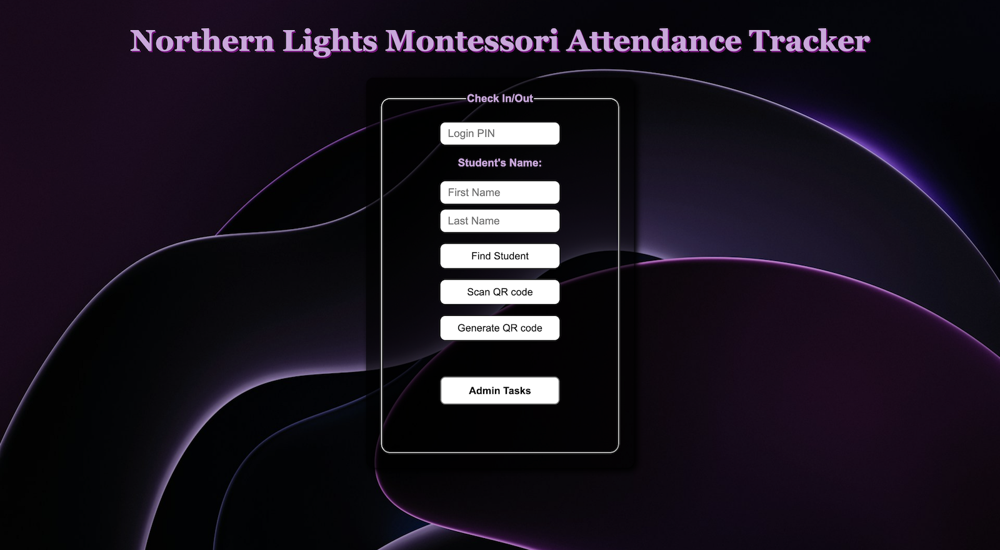
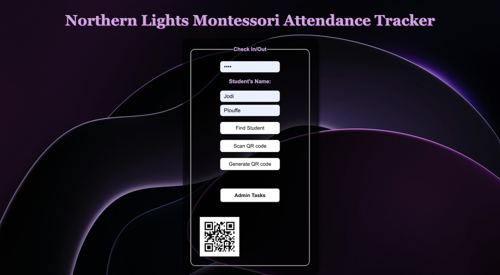
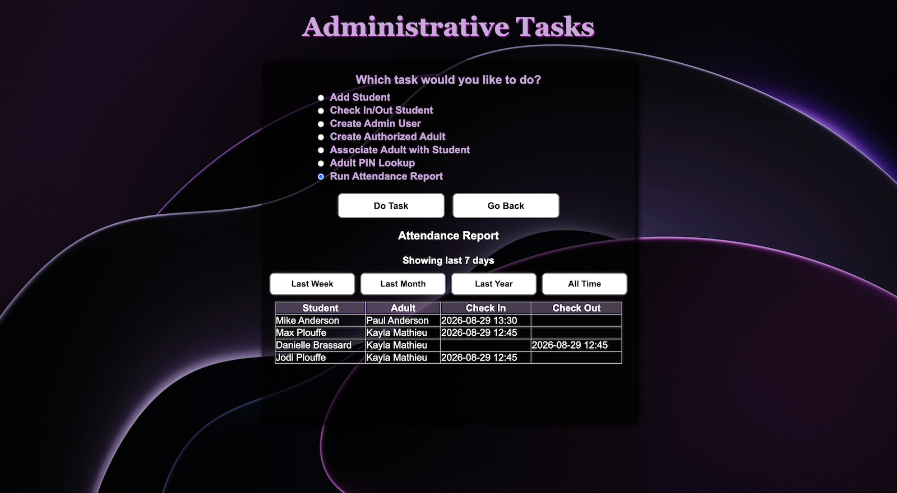

Full-stack team project
Montessori Student Attendance Tracker
This full-stack team project was completed for a Software Engineering course. Our six-person team built a student attendance check-in/check-out system designed for a Montessori school. The system allows authorized adults to check students in and out using a PIN or QR code while maintaining timestamped attendance records.
The application also provides administrative tools for managing students, authorized adults, adult-student relationships, administrator accounts, PIN lookup, and attendance reports.

Problem and Objective
The school needs a clearer way to record student check-ins and check-outs with timestamps. The main objective is to connect student records, authorized adult information, and attendance status so the school can track who checked a student in or out and when it happened.
Technical Implementation
The application uses React and Vite for the frontend, Node.js and Express for the backend, and MySQL for data storage. REST API routes support PIN verification, student lookup, attendance status updates, and timestamped check-in and check-out records. The frontend also supports generating and scanning QR codes.
The administrative interface supports adding students and authorized adults, connecting adults with students, creating administrator accounts, looking up adult PINs, and generating attendance reports. Administrator passwords are protected using bcrypt.
Challenges and Solutions
One challenge was verifying that an authorized adult was connected to a student before allowing an attendance update.
We addressed this by connecting students and authorized adults through a relationship table using their unique IDs. The attendance workflow verifies the adult's PIN and student relationship before allowing a check-in or check-out, and each attendance record stores the associated student, adult, and timestamp.
Results and Learning
The completed application supports PIN and QR code check-in/check-out, administrator login, student and authorized-adult management, relationship management, PIN lookup, and attendance reporting.
The project includes 90 automated tests using Vitest, with GitHub Actions running the tests and checking the frontend build. Through this project, I strengthened my experience with relational database design, SQL, REST APIs, full-stack integration, testing, documentation, and maintaining a shared team codebase.
Project Screenshots
These screenshots show the main attendance workflow, QR code functionality, administrative reporting, and relational database design.
Main Attendance Page

QR Code Functionality

Attendance Report

Database Design / ERD